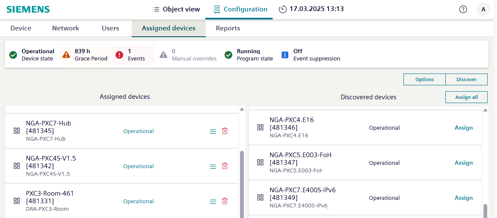

Assigned devices tab
Assigned devices display information on the remote devices that are accessible on the same network. A maximum of 50 assigned devices is supported.

Button | Setting | Description |
|---|---|---|
Discover |
| List the status of the devices based on the locally connected device type and connection type. |
Assign all |
| All devices that have not yet been assigned are assigned. |
Options | Discovery scope | Determines if the device discovery is restricted to the local network or if remote networks are included. Options: Local network or Remote network. |
Network number | The network number to use for the device discovery. | |
Device range, maximum | Limits the device discovery to a range of devices. The maximum value is 4194302. The minimum value is 1. | |
3rd party devices | Determines if third-party devices are included in the device discovery. Select False to exclude third-party devices, or True to include third-party devices. |